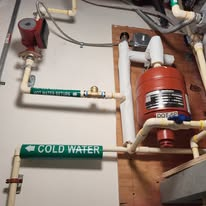
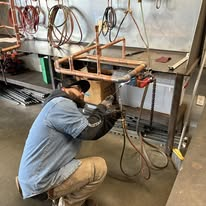
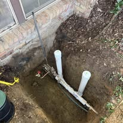

Home › Service Areas › West Palm Beach
Plumber in West Palm Beach, FL
From Flamingo Park bungalows to downtown high-rises, licensed plumbers with flat pricing.
A plumber in West Palm Beach needs range. The city holds 1920s Mediterranean bungalows, 1960s ranch neighborhoods, waterfront estates and downtown condo towers, and each one fails differently. Call (833) 567-2788 for a live answer, a price range on the phone and a same-day arrival window.
We are licensed, insured and permitted for work throughout the city, and every job is quoted flat rate in writing before we begin.

Historic districts
Flamingo Park, El Cid and Northwood Plumbing
The historic districts are beautiful and their plumbing is old. Homes in Flamingo Park, El Cid, Northwood Shores and Old Northwood date to the 1920s and 1930s, and many still have original galvanized supply lines feeding fixtures that were updated decades later.
Galvanized pipe closes with internal rust. Pressure drops slowly enough that homeowners adjust to it without noticing, until two fixtures cannot run at the same time. Repiping in PEX or copper restores full flow, and in these homes we route lines carefully to protect original plaster, wood floors and tile.
Drain lines in the same houses are usually cast iron, and by now the bottom of the pipe has often channeled out. A camera inspection is the fastest way to know whether you are looking at another clearing or a real replacement.


City water supply
Surface Water and What It Does to Fixtures
West Palm Beach is unusual in Palm Beach County. The city draws its drinking water largely from surface sources tied to Grassy Waters Preserve and Clear Lake rather than purely from wells. The water is treated to standard and still carries hardness and seasonal taste and odor variation that many residents notice.
Practically, that means two things. Scale still builds in water heaters and fixture cartridges, so softening is worth considering. And carbon filtration makes a bigger difference to taste here than in neighboring cities, particularly during the wet season when raw water quality shifts.
Condos and coverage
High-Rise and Neighborhood Coverage
Downtown and along Flagler Drive, condo plumbing has its own rules. Shared stacks, limited shutoff access and building rules on work hours all shape how a repair happens. We coordinate with building management, schedule water shutoffs properly and carry the insurance documentation most associations require.
Across the rest of the city we cover Northwood, Southend, Flamingo Park, El Cid, Grandview Heights, Ibis, Andros Isle and the neighborhoods along Okeechobee Boulevard and Southern Boulevard.

Good to know
West Palm Beach Plumbing: Water Supply, Districts and Condo Rules
The city spans 1920s historic districts, mid-century neighborhoods and downtown towers, each with its own plumbing profile.
A surface water supply, unusually
West Palm Beach is unusual in Palm Beach County because its drinking water comes largely from surface sources connected to Grassy Waters Preserve and Clear Lake rather than purely from wells. Water meets all safety standards and still carries hardness plus seasonal taste and odor variation that residents notice, particularly in the wet season. Catalytic carbon filtration makes a bigger difference here than in neighboring cities.
Historic districts and pipe age
Flamingo Park, El Cid, Northwood Shores and Old Northwood date to the 1920s and 1930s. Expect galvanized supply lines, cast iron drains and fixtures updated decades after the house was built. Southend and the neighborhoods along Belvedere and Southern Boulevard are mid-century. Newer communities like Ibis and Andros Isle sit west of the turnpike on modern plastic pipe.
Downtown high-rise plumbing
Along Flagler Drive and through downtown, condo plumbing follows building rules rather than house logic. Shared stacks, limited unit shutoffs, booster pumps and pressure-reducing valves all shape a repair. We coordinate shutoffs with management, carry the insurance documentation associations require, and determine whether a fault sits in the unit or the building before work begins.
Booking a plumber in West Palm Beach?Call for a price range on the phone and a same-day arrival window.
Full service list
Plumbing Services We Provide in West Palm Beach, FL
Every service below is available at West Palm Beach addresses, on the same schedule and the same flat-rate pricing we use in Boynton Beach.
Emergency Plumber
When a supply line lets go or sewage comes up through a floor drain, the first job is stopping the water and the second is telling you what the repair costs. Our emergency plumbers in Boynton Beach walk you through the shutoff on the phone, arrive with a stocked truck, and hand you a written flat price before anything is opened up.
See Emergency Plumber details →Drain Cleaning
Slow showers, gurgling sinks and a main line that backs up every few months are rarely one hair clog. They are grease, scale and old cast iron that has narrowed over decades. We clear the blockage with cabling or hydro jetting, then camera the pipe so you can see whether it was a clog or a damaged line causing it.
See Drain Cleaning details →Water Heater Repair & Installation
No hot water, rusty hot water or a puddle under the tank each point somewhere different. We test elements, thermostats, gas valves and the anode rod before quoting, because a failed part costs a fraction of a new heater. When the tank really is finished, we replace 40 to 80 gallon units with the permit and haul-away included.
See Water Heater Repair details →Tankless Water Heater Installation
A tankless water heater ends the back-to-back shower problem and frees up the closet or garage floor. Getting twenty years out of one depends on demand sizing, gas or electrical capacity and descaling access, not the brand on the box. We size the unit to your real fixture load and build in isolation valves for annual flushing.
See Tankless Water Heater details →Leak Detection and Repair
A water bill that doubled with nothing visible means water is escaping somewhere you cannot see. Acoustic listening equipment, thermal imaging and pressure isolation let us pinpoint hidden leaks in walls, slabs, irrigation and pool lines, usually within inches. Demolition is the last resort here, never the opening move.
See Leak Detection details →Slab Leak Repair
Warm patches on a tile floor, running water with every tap closed and hairline cracks across a room all point under the concrete. Boynton Beach homes sit on slabs with copper poured into them, so this is one of our most common calls. We locate the leak precisely, then price spot repair, overhead reroute and repipe side by side.
See Slab Leak Repair details →FAQs
West Palm Beach Plumbing Questions, Answered
Do you work in downtown condo buildings?
Yes. We coordinate with building management on shutoffs, access and work hours, and we carry the insurance documents associations require.
Why is my water pressure low in an older home?
Galvanized supply pipe rusts closed from the inside. We test before recommending a repipe so you are not replacing sound pipe.
Does West Palm Beach water need filtration?
It is safe and treated, but it is hard and has seasonal taste variation. Softening and carbon filtration both make a noticeable difference.
How fast can you reach West Palm Beach?
Same-day for most calls, with after-hours emergency dispatch across the city.
Coverage by ZIP code
West Palm Beach Plumber Coverage by ZIP Code
West Palm Beach is the largest service area we cover, spanning a dozen ZIP codes and close to a century of building styles. A 1925 bungalow in El Cid and a 2018 home out near the Bee Line Highway fail in completely different ways, and our trucks are stocked for both.
Plumber in 33401
Downtown West Palm Beach, Clematis Street, El Cid and Flamingo Park. Historic homes with cast iron drains and galvanized supply, plus downtown condo stack work.
Plumber in 33403
North along the Lake Park line and the Northwood corridor. Older slab homes needing repipes and water heater replacement.
Plumber in 33404
Northern West Palm Beach toward Riviera Beach. Drain cleaning, sewer lateral repair and emergency leak repair.
Plumber in 33405
The South End and SoSo neighborhoods off Dixie Highway. 1940s and 1950s housing stock with slab copper leaks and failing cast iron.
Plumber in 33406
South West Palm Beach near the airport and the Palm Springs line. Water heater repair, toilet rebuilds and drain cleaning.
Plumber in 33407
Northwood Hills and north-central West Palm Beach. Whole-home repipes, fixture replacement and sewer camera inspections.
Plumber in 33409
Central West Palm Beach along Palm Beach Lakes Boulevard. Condo and apartment plumbing, angle stops and garbage disposals.
Plumber in 33411
West toward the Royal Palm Beach line. Newer CPVC and PEX homes with fixture leaks and water filtration installations.
Plumber in 33412
Northwest West Palm Beach, including the Ibis area and the Bee Line Highway corridor. Well and irrigation tie-ins, filtration and tankless installs.
Plumber in 33413
Southwest West Palm Beach near the Greenacres line. Drain cleaning, slab leak detection and water heater replacement.
Plumber in 33415
South-central West Palm Beach along Military Trail. Cast iron drain repair, repipes and emergency plumbing.
Plumber in 33417
Central-west West Palm Beach off Okeechobee Boulevard, including the Century Village area. Condo shut-offs, water heater swaps and shared drain stacks.
Nearby ZIP codes we also cover the same day
- 33402
- 33461
- 33467
- 33414
Not sure which ZIP code you are in? Call (833) 567-2788 and we will confirm coverage and give you an arrival window before anyone is dispatched.
Need a plumber in West Palm Beach today?
Call now for a live answer, a flat written price and a same-day arrival window across West Palm Beach and Palm Beach County.